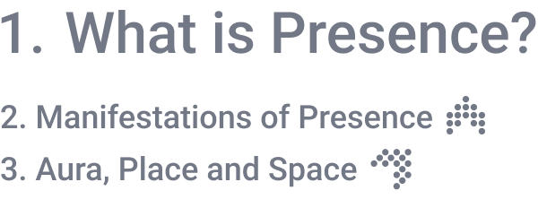
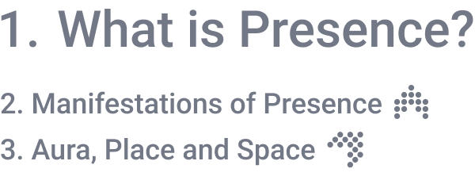

.webp?v=1644331344700) 



Treehugger: Wawona
Treehugger: Wawona VR experience transports the users to the red giant Sequoia trees from the Sequoia National Park. It provides a sense of intimacy with the tree - with its bark, with the cells that make up its being. The vividness of the work illustrates presence.
"These definitions circle around one core idea: that presence is a kind of absence, the absence of mediation. Presence as transportation, immersion, or realism all come down to the user's forgetting that the medium is there."
Cybersickness is visceral evidence that VR is not the medium to end all media.
Cybersickness and the negation of presence
The term cybersickness, or visually induced motion sickness, has been coined to describe symptoms including headache, nausea, eye strain, dizziness, fatigue, or even vomiting that may occur during or after exposure to a virtual environment. Cybersickness is visceral evidence that VR is not the medium to end all media. Cybersickness reminds the susceptible user of the medium in a powerful way. Nausea replaces astonishment.
Pit Experiement
The Pit experiments were conducted by researchers at the University of North Carolina in the early 2000s, to establish empirical evidence of presence in virtual reality. They constructed a physical set, complete with platforms and walls, that matched the virtual scene. The subjects were asked to perform simple tasks that involved walking to the edge of a virtual pit. Researchers measured their physiological reactions to see if they experienced signs of fear, such as an accelerated heart beat. Pass through the portal to experience a replica of one version of their Pit Room yourself.